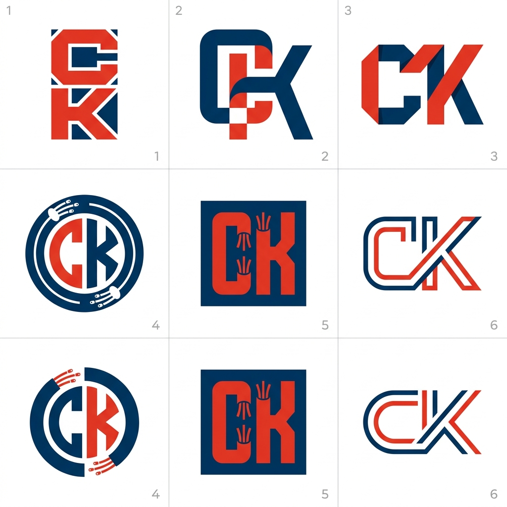
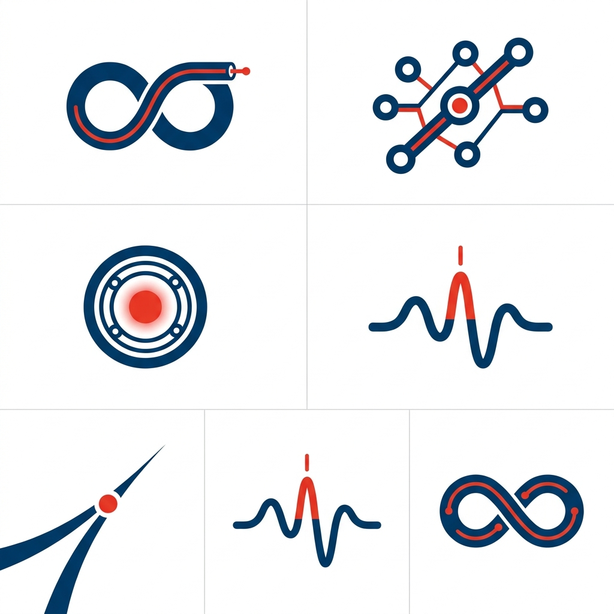
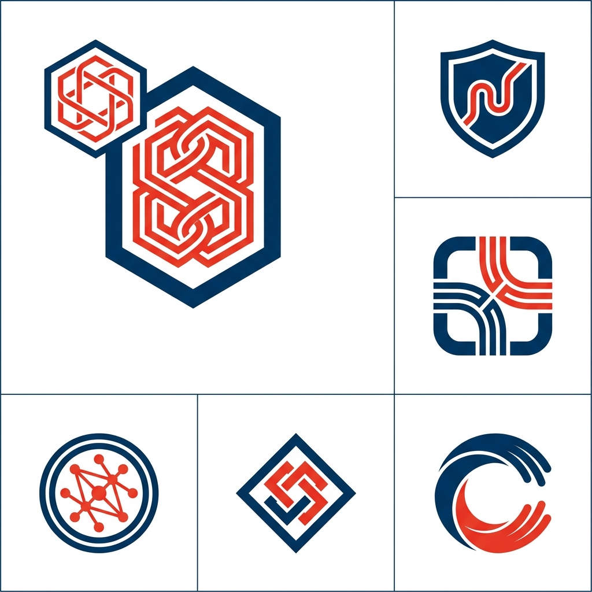

Черновая разведка направлений. Это не финальная отрисовка, а карта идей: смотрим, какая цепляет, выбранный вариант переводим в чистый вектор (SVG) и дорабатываем по фирменному стилю. Палитра адаптирована под группу: тёмно-синий #013F78 + красный #EE3A23.
Как читать. Надписи в черновых концептах могут быть кривыми, на них не смотрим. Оцениваем идею символа, силуэт и считываемость на маленьком размере. Ниже под каждым листом - мой отбор сильных тайлов.
1. Монограмма «СК» лаконичный знак из двух букв, лучше всего масштабируется
Прямая привязка к имени. Жёсткие геометричные формы = «строим, надёжно». Тайлы 4-5 уже подмешивают оптоволокно (нити в кольце/квадрате).

Тайл 3 - угловые СК внахлёст
Красная С + синяя К, острые грани. Современно, читаемо, характер.
Тайл 6 - линейная СК
Тонкий контур, техно-минимализм. Отлично в фавикон и мелкий размер.
Тайл 5 - СК в квадрате + волокно
Оптические «нити» внутри буквы. Привязка к сути ВОЛС.
2. Абстрактный символ смысловые знаки без букв
Тут самая честная семантика для подрядчика: трасса, узел, соединение, сигнал. Такой знак живёт отдельно от названия и хорошо работает на технике/спецодежде.

Низ-лево - трасса в узел
«Строим магистраль до точки». Минимализм, сильный силуэт. Мой фаворит по смыслу.
Верх-право - узлы сети
Читается «магистраль/сеть» мгновенно. Узнаваемо для телекома.
Верх-лево - петля волокна
«Связь» + «коннект» в одном жесте, с коннектором на конце.
3. Эмблема / бейдж замкнутый знак-контейнер
Солиднее и «корпоративнее», хорошо для печатей, наклеек, штампов на муфтах. Риск - уйти в охранно-ЧОПовскую эстетику, за этим следим.

Средний-право - стык кабелей в скруглённом квадрате